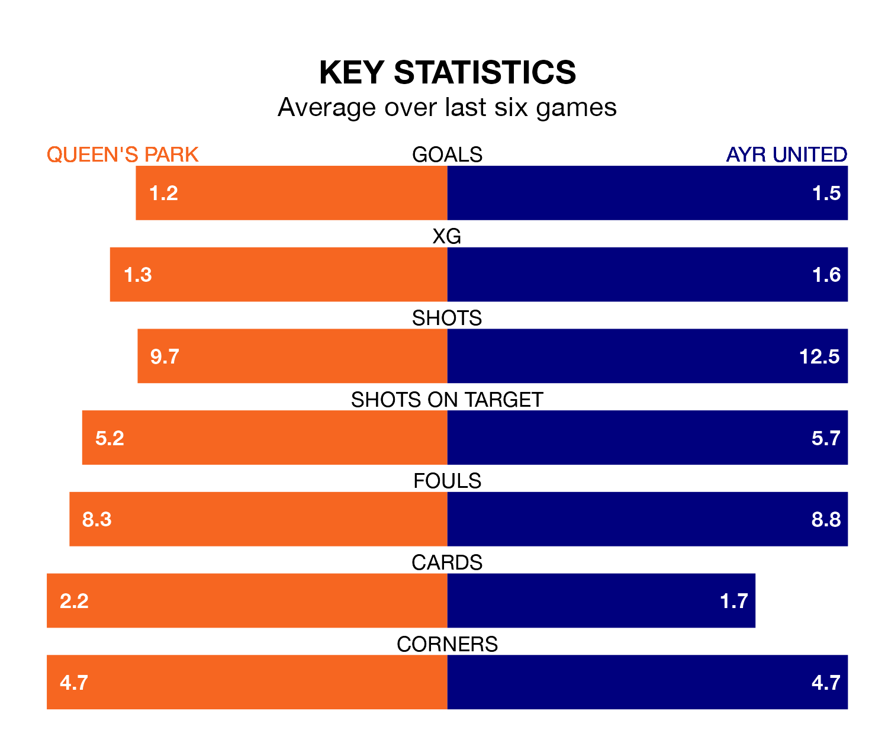

Struggling Queen's Park face Ayr United at Hampden Park on Saturday looking to build on a win in their last league outing.
After securing all three points with a 2-1 victory over Raith Rovers on January 13, the Spiders sit ninth in the Championship.
They travel to play an Ayr side seventh in the standings, who also won their last match, 2-0 against Arbroath, on Tuesday.
In Ruari Paton, Queen's Park have the league's most on-form striker so far this season. He has notched 10 goals in 20 appearances.
His goal rate of one every 179 minutes is quicker than that of Jamie Murphy, Ayr's top scorer with a goal every 327 minutes, and a total of four goals in 17 games.
With 27 goals in 21 games so far this season, United are scoring at below the league average rate with 1.3 goals per game. And they are conceding more than average, letting in 38 goals at a rate of 1.8 per game.
The Spiders are also below average scorers, with 1.3 goals per game, compared to a league average of 1.4. They have conceded 2.0 goals per game.
In the last 10 years, Queen's Park and Ayr have played each other on 11 occasions. Queen's Park won one of them, Ayr seven, and they drew three times.
On average, the Spiders scored 1.0 goal and the Honest Men 2.5 in those matches.
Their last meeting was on November 4, when they played out a 2-2 draw.
The home side are in mixed form in the Championship, with two wins and a draw from their last six games.
With a win and three draws over that period, the Honest Men's form is slightly worse – they have taken six points from 18, compared to Queen's Park's seven.
Saturday's match will be refereed by Steven Kirkland, who has taken charge of three Championship games so far this season, issuing one red card and booking 12 players. He has awarded one penalty.
The last Queen's Park game Kirkland refereed was a 3-2 away loss to Partick Thistle on January 2. He is yet to oversee a match featuring Ayr this season.
Updated: 09:07 (UTC), 24/01/24